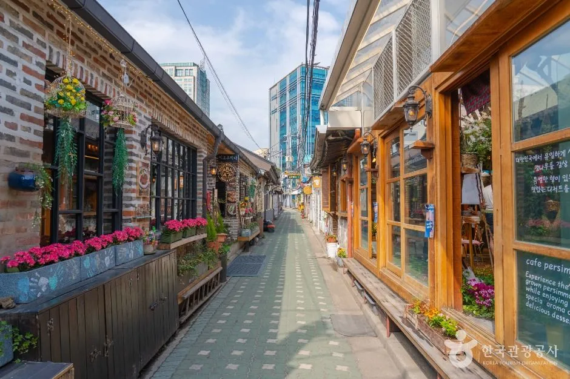
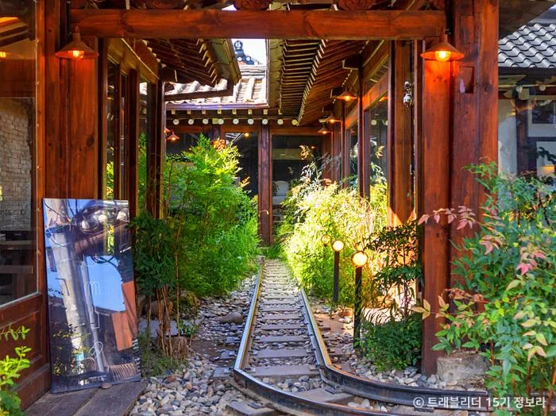
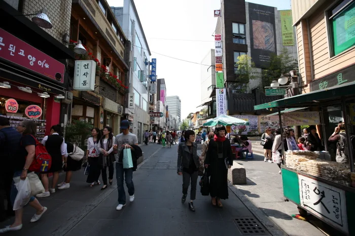
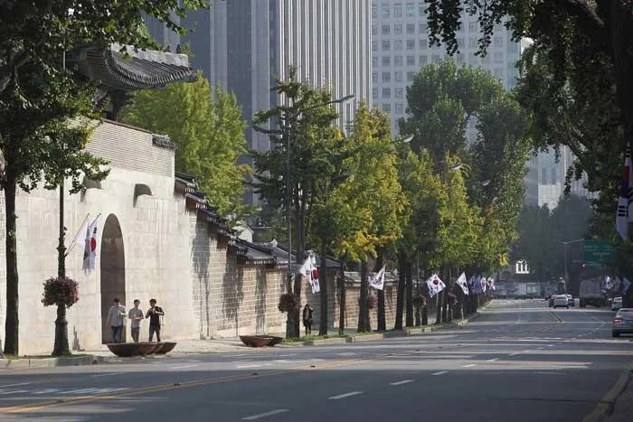
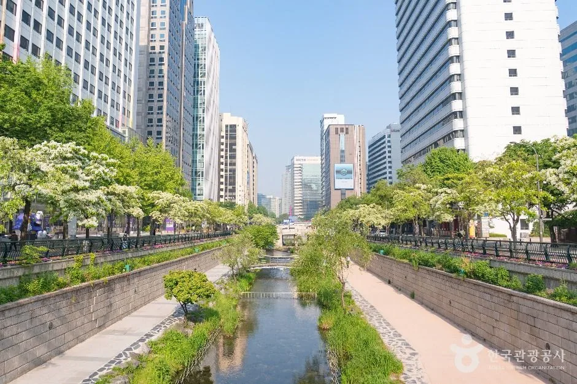
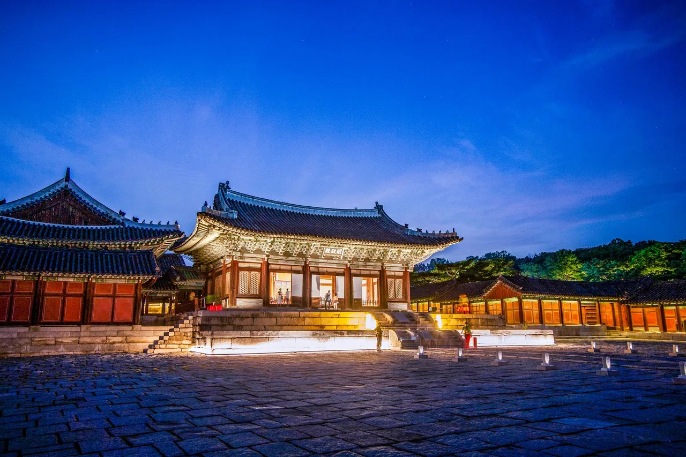

▲ 서순라길. 종묘 서쪽 돌담을 따라 이어지는 길로, 순라군이 순찰하던 경로에서 이름이 왔다
서순라길이라는 이름은 순찰에서 왔습니다. 조선시대 도성의 치안을 맡은 순라군이 다니던 길이고, 종묘를 순찰하던 순라청의 서쪽이라 서순라길로 불립니다.
지금은 종묘 돌담을 따라 걷는 길입니다. 봄에는 꽃이, 가을에는 단풍이 돌담과 겹치면서 사진이 잘 나오는 구간으로 알려졌습니다. 문제는 이 길이 서울에서 차로 가기 가장 까다로운 축에 속한다는 점입니다.
1. 걸어서 다 이어지는 동네
이 일대의 특징은 밀도입니다. 서순라길 주변으로 익선동, 인사동, 북촌, 삼청동이 전부 도보 거리 안에 있습니다. 차로 이동할 만한 거리가 아니라는 뜻입니다.

▲ 익선동 한옥 골목. 이 폭에는 차가 들어갈 수 없다 ⓒ 대한민국 구석구석(한국관광공사)
익선동이 대표적입니다. 한옥 약 110채가 모여 있고 2018년 한옥보전지구로 지정된 뒤 2019년부터 레트로 열풍과 맞물려 부상했습니다. 골목마다 가게가 들어섰지만, 그 골목은 원래 주거용 통로였습니다.

▲ 익선동 골목의 상점. 차량 통행을 전제로 만들어진 공간이 아니다 ⓒ 대한민국 구석구석(한국관광공사)
북촌도 사정이 비슷합니다. 경복궁과 창덕궁, 종묘 사이에 자리한 전통 주거지역이고, 경사진 골목이 많아 차로 올라가면 회차 지점을 찾기 어렵습니다.

▲ 북촌 한옥마을의 경사 골목. 차량 진입 시 회차가 어렵다 ⓒ 대한민국 구석구석(한국관광공사)

▲ 인사동. 보행자 밀도가 높아 차량이 지날 수 있어도 실익이 없다 ⓒ 대한민국 구석구석(한국관광공사)
이 일대는 종로청계 관광특구로 묶여 있습니다. 경복궁·창덕궁·창경궁·덕수궁·운현궁과 종묘가 한 권역 안에 들어 있고, 인사동 전통문화의 거리와 광장시장 같은 상권이 그 사이를 채웁니다. 목적지 하나를 위해 차를 움직이는 구조가 아닙니다.

▲ 한옥 골목의 숙소. 이 폭의 길이 이 일대 도로망의 기본 단위다 ⓒ 대한민국 구석구석(한국관광공사)
2. 주차장은 목적지 밖에 잡는다
이 지역에서 통하는 원칙은 하나입니다. 목적지 옆에 세우려 하지 말고, 큰길가 공영주차장에 한 번 세우고 전부 걸어서 도는 것입니다.
이유는 명확합니다. 익선동이나 서순라길 안쪽에는 주차장이 물리적으로 존재하지 않습니다. 근처를 돌며 자리를 찾는 시간이 큰길가에 세우고 걷는 시간보다 항상 깁니다.

▲ 북촌에서 본 도심. 한옥 구역과 업무지구가 맞붙어 있다 ⓒ 대한민국 구석구석(한국관광공사)

▲ 덕수궁 돌담길. 큰길에 세우고 걸어 들어가는 것이 이 일대의 기본 동선이다 ⓒ 대한민국 구석구석(한국관광공사)
📍 도심 주차에서 실제로 드는 비용
서울 도심 공영주차장은 10분 단위로 요금이 붙습니다. 한나절 세워두면 금액이 만만치 않고, 골목에 잠깐 세웠다가 단속되면 과태료가 그보다 큽니다. 이 지역은 민원 신고 단속이 활발한 구역이기도 합니다. 주차 요금과 과태료를 비교하면 주차장이 항상 싸다는 것이 결론입니다.
대중교통이 대안이 아니라 정답인 구역도 있습니다. 지하철역이 촘촘하게 배치돼 있어, 차를 아예 가져오지 않는 선택이 시간과 비용 모두에서 유리한 경우가 많습니다.
3. 하나의 도보 축으로 묶기
동선을 축으로 잡으면 정리가 됩니다. 창덕궁에서 시작해 종묘 돌담을 따라 서순라길을 걷고, 익선동으로 넘어가 마무리하는 구성이 자연스럽습니다.

▲ 창덕궁 돈화문. 1412년 건립됐고 창덕궁은 1997년 유네스코 세계유산으로 등재됐다 ⓒ 대한민국 구석구석(한국관광공사)

▲ 창덕궁 인정전. 관람에만 한두 시간이 걸려 주차 시간 계산의 기준이 된다 ⓒ 대한민국 구석구석(한국관광공사)
창덕궁은 이 축의 앵커 역할을 합니다. 1997년 유네스코 세계유산으로 등재된 궁궐이고, 주변 지형을 살린 배치로 알려져 있습니다. 정문인 돈화문은 1412년에 세워졌습니다.
| 순서 | 지점 | 성격 |
|---|---|---|
| 1 | 창덕궁 | 유료 관람 · 체류 1~2시간 |
| 2 | 서순라길 | 종묘 돌담 산책 · 30분 |
| 3 | 익선동 | 식사·카페 · 1~2시간 |
| 4 | 인사동 또는 북촌 | 선택 연장 |
이 축은 왕복이 아니라 편도로 짜는 편이 낫습니다. 걸어서 한 방향으로 흐른 뒤 지하철로 출발지에 돌아오면, 같은 길을 두 번 걷지 않아도 됩니다.

▲ 청계천 일대. 큰길가 공영주차장을 거점으로 삼기 좋은 축이다 ⓒ 대한민국 구석구석(한국관광공사)
예산을 줄이려면 무료 구간을 섞으면 됩니다. 운현궁은 입장이 무료이고 하절기(4~10월)에는 09:00~19:00, 동절기(11~3월)에는 09:00~18:00에 엽니다. 월요일에는 쉽니다. 창경궁은 성인 1,000원으로 저렴한 편입니다.
4. 계절과 시간대가 난도를 바꾼다
가을이 가장 붐빕니다. 돌담과 단풍이 겹치는 시기라 사진 수요가 몰리고, 주말 오후에는 익선동 골목이 사람으로 채워져 이동 속도 자체가 느려집니다.
평일 오전이 가장 여유롭습니다. 익선동 가게 상당수가 오전 늦게 문을 열기 때문에, 이른 시간에는 궁궐과 돌담길 위주로 돌고 점심 무렵 골목으로 들어가는 순서가 효율적입니다.

▲ 고궁 야간 개방. 창경궁은 저녁 9시까지 열려 늦은 시간대 동선을 만들 수 있다 ⓒ 대한민국 구석구석(한국관광공사)
저녁 시간대를 쓰는 방법도 있습니다. 창경궁은 오후 9시까지 운영하고 입장은 8시에 마감합니다. 낮에 골목을 돌고 저녁에 궁궐로 넘어가면, 주차장 회전이 빠져나가는 시간대와 겹쳐 출차가 수월해집니다.
정리하면 이렇습니다. 서순라길과 익선동은 차로 가는 곳이 아니라 차를 어디에 두고 걸어 들어갈지를 정하는 곳입니다. 이 전제만 받아들이면, 서울에서 반나절을 가장 밀도 있게 쓸 수 있는 구역이 됩니다.